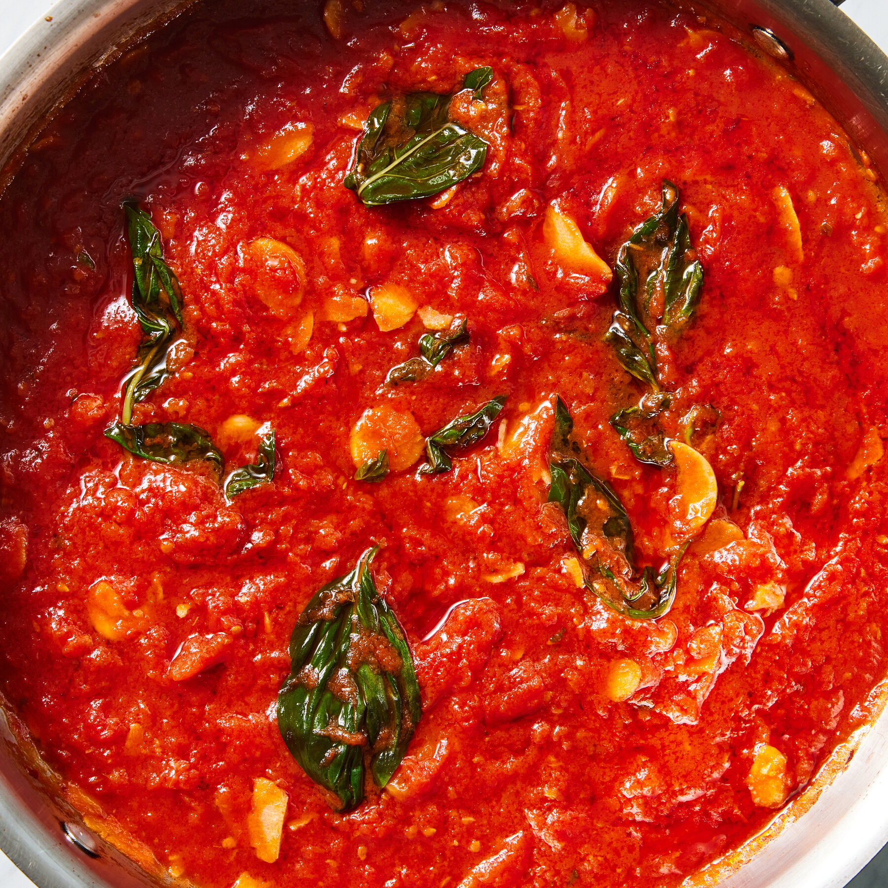

Manolo's Extra Special Marinara Recipe

Look at that marinara, I want to take a swim in it
This marinara recipe comes at you all the way from Colorado, it's rich and silky, and simple to make too.
Ingredients
- 1 can San Marzano Tomatoes
- 50g Olive oil
- Red Pepper Flakes
- 50g sliced Garlic
- Basil
- Salt to taste
Steps
- Blend the tomatoes with a hand blender
- Add all ingredients except for basil and bring to a simmer
- Simmer for 1 hour
- Turn heat off and add torn basil
- Season with salt
Home